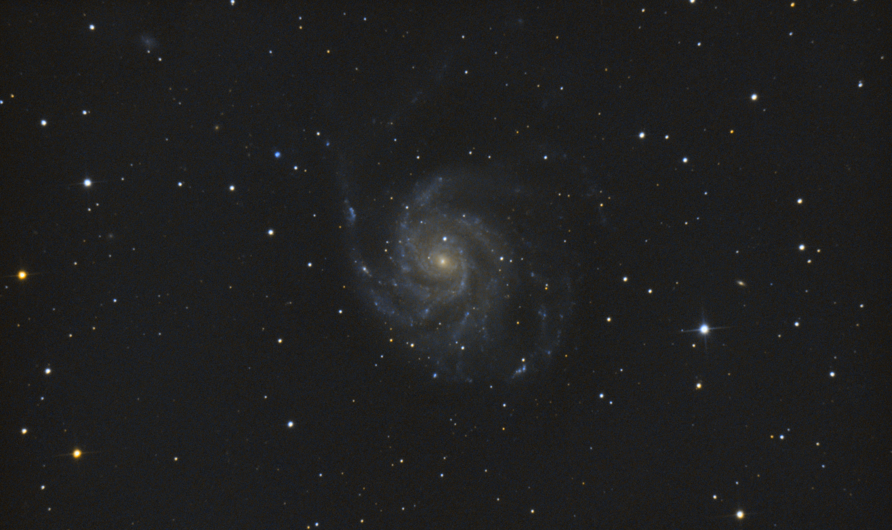
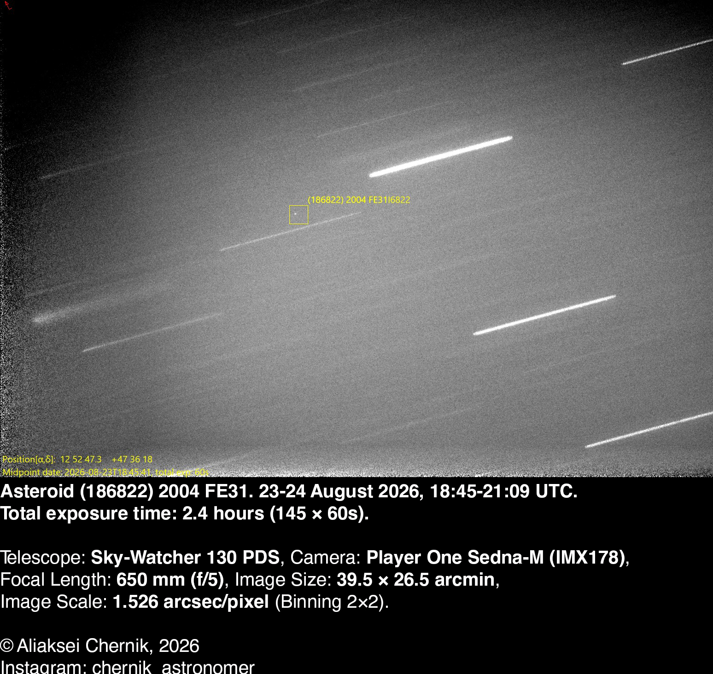
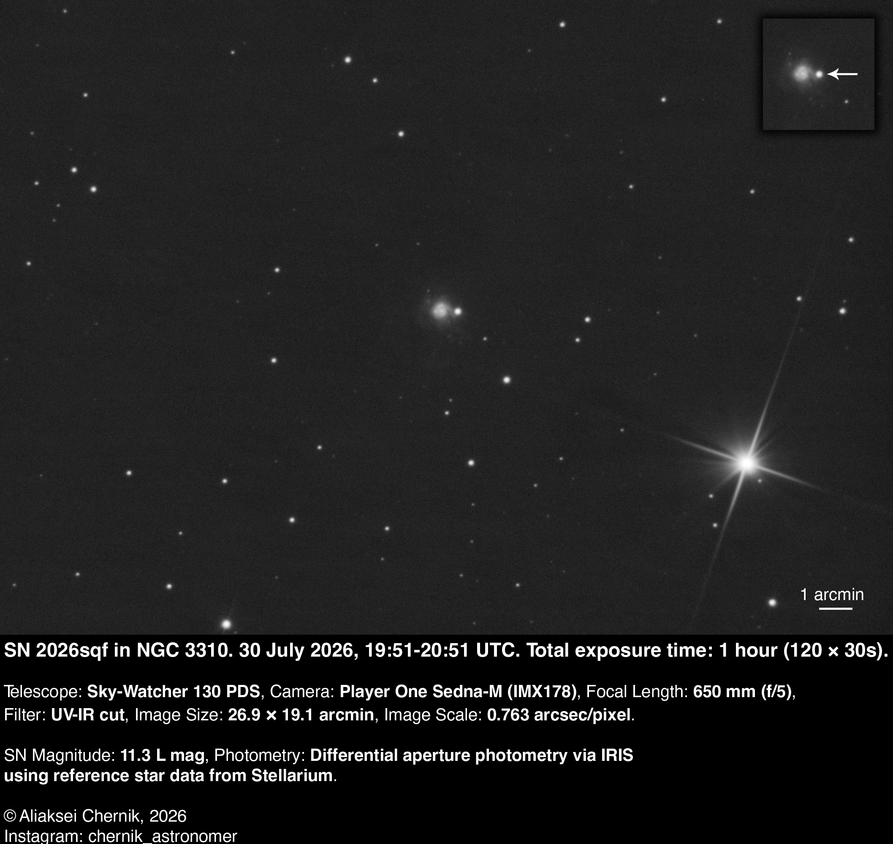
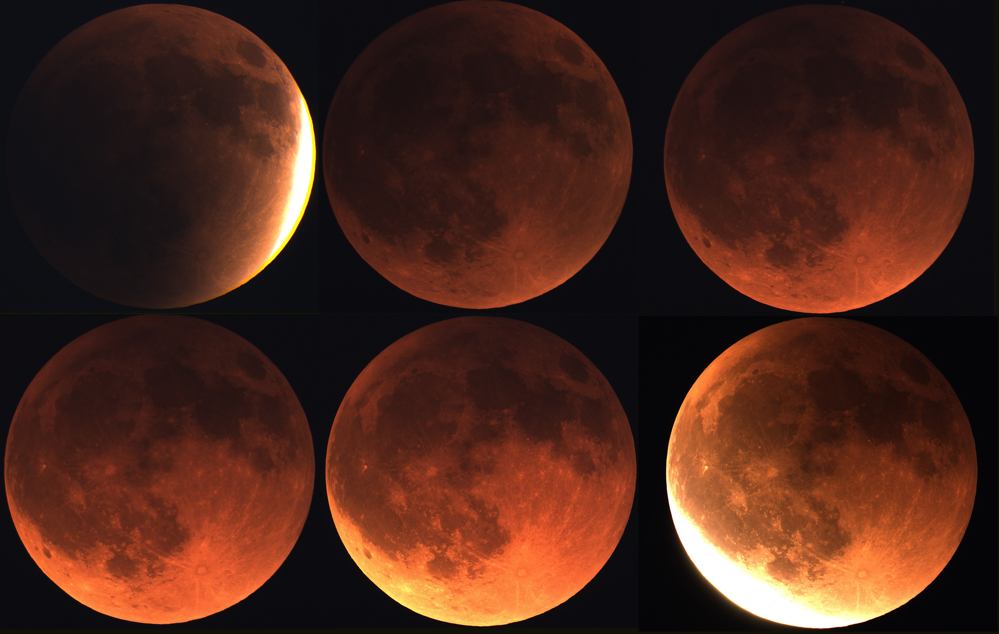
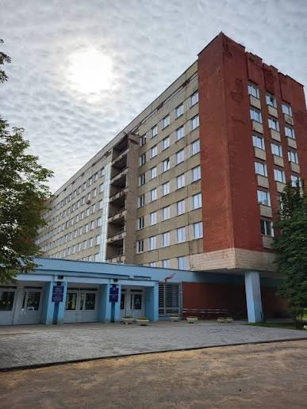

{kind=link}

Hi! I'm Aliaksei Chernik,
amateur astronomer and cybersecurity student.
I photograph deep-sky objects, planets and comets, and study information security.
Astronomy
Amateur astrophotography from Belarus. Deep-sky objects, planets, comets and the Moon, mostly shot with a Sky-Watcher 130PDS reflector. Below are some of my favourite captures.
I had photographed this galaxy before, so I used some frames from 2024 as well.
Besides the galaxy itself, the image shows regions of ionized hydrogen where star formation is actively ongoing.
{kind=link}

Asteroid (186822) 2004 FE31
I captured an object that is quite hard to catch - asteroid 186822. It is about 1 km across. At magnitude 18-19, it is near the limit of amateur telescopes. To see it, I stacked frames in ASTAP with the asteroid's orbital motion - so the stars trailed into lines while it stayed a point. The post also has a timelapse and a normal star-aligned stack where the asteroid is not visible at all.

NGC 5906 - Knife Edge Galaxy
This galaxy is interesting because it is turned edge-on to us, so we see it as a thin strip - which is how it got its name. There is also a lot of hydrogen in the background, which could become visible with longer integration time.
2026.07.30 | Sky-Watcher 130PDS | ZWO 585MC (IMX585) | 2 hours (60 × 120 s)
{kind=link}

SN 2026sqf in NGC 3310
SN 2026sqf was discovered in the galaxy NGC 3310, located in Ursa Major about 50 million light-years away. This is already the third supernova found in this galaxy - likely because NGC 3310 collided with another galaxy in the distant past, which boosted its star formation rate. The supernova is fairly bright at around magnitude 11.5 and can be captured with a telescope and camera.

Jupiter
2026.05.02 | Sky-Watcher 130PDS | ZWO 585MC | 1300 mm (2× Barlow)
{kind=link}

Lunar Eclipse
2025.09.07 | Sky-Watcher 130PDS | ZWO 585MC

Comet C/2023 A3 (Tsuchinshan-ATLAS)
2024.10.18 | Sky-Watcher 130PDS | ZWO 585MC | 48.5 minutes (97 × 30 s)

M 63 - Sunflower Galaxy
2025.08.02 | Sky-Watcher 130PDS | Player One Sedna-M (IMX178) | 1 hour (20 × 180 s)

M 82 - Cigar Galaxy
2025.05.31 | Sky-Watcher 130PDS | ZWO 585MC | 28 minutes (14 × 120 s)
Cybersecurity

4th-year student at the Faculty of Radiophysics and Computer Technologies, Belarusian State University (BSU), majoring in Cybersecurity. Throughout my studies I have built a solid theoretical foundation in IT and information security. Key knowledge and skills: understanding of the core principles of information security (confidentiality, integrity, availability). Knowledge of operating system architecture and computer network design. Basic skills in network modelling with Cisco Packet Tracer.